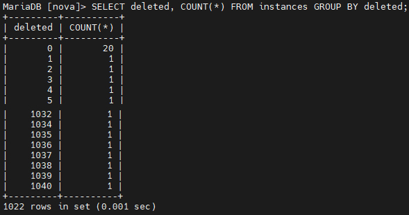
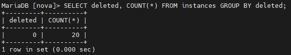

사내 Cloud 관리 Console의 Backend를 만들고 있습니다. Instance 목록 화면이 로딩만 돌다가 Timeout으로 끝났습니다. 그때 떠 있던 Instance는 스무 개였습니다.
스무 개를 못 그릴 코드가 아닙니다. 그래서 코드를 열기 전에 CLI로 같은 목록을 불러 봤고 거기서도 54초가 걸렸습니다. 우리 Backend를 거치지 않아도 54초라면 느린 구간은 그 아래에 있습니다.
아래를 들여다보니 비정상이 둘 같이 보였습니다. Swap이 8.0GiB를 전부 쓰고 있었고 instances 테이블에는 삭제 표시만 된 행이 1,021개 남아 있었습니다. 둘을 정리하자 같은 CLI 조회가 1.0초가 됐습니다.
그리고 제가 그때 쓴 명령은 운영에서 쓰면 안 되는 것이었습니다. 한 달 뒤에 같은 문제를 두고 제대로 된 답을 문서로 냈습니다. 이 글은 그 둘을 같이 적습니다.
이 글의 예상 독자#
- OpenStack이나 다른 시스템을 운영하면서 ‘데이터는 지웠는데 느립니다’를 겪어 보신 분
- 느린 화면을 만나면 먼저 애플리케이션 코드부터 여시는 분
- 급할 때 DB에 직접
DELETE를 넣어 본 적이 있는 분
어떤 화면인가요?#
프로젝트 안의 Instance 목록을 보는 화면입니다. 목록을 부르면 관리 Console의
Backend가 OpenStack의 Compute API에 물어보고 그쪽은 다시 자기 DB(MariaDB)의
instances 테이블을 읽습니다.
첫 갈림길: CLI로도 54초였습니다#
화면이 안 뜰 때 가장 먼저 한 것은 같은 것을 다른 길로 불러 보는 것이었습니다.
$ openstack server list54초가 걸렸습니다.
여기서 전후를 같은 요청으로 보장하지 못합니다. 기록에 남은 것은
고치기 전이 openstack server list, 고친 뒤가
openstack server list --all-projects입니다. 옵션이 다릅니다.
그리고 고치기 전에는 터미널 갈무리가 없고 ‘54초’라는 숫자만 남아 있습니다.
그래도 이 한 줄이 얻어 준 것이 있습니다. 관리 Console의 Backend를 거치지 않는 경로에서도 54초가 걸렸다는 것입니다. 느린 구간이 Compute API 아래에 적어도 하나 있다는 뜻입니다. 이것이 우리 Backend가 아무 지연도 보태지 않았다는 증명은 아닙니다. 그쪽은 따로 재지 않았습니다.
화면이 느릴 때 애플리케이션 코드부터 여는 것은 습관이지 진단이 아닙니다. 같은 질문을 다른 경로로 한 번 던지면 찾을 곳이 줄어듭니다.
원인 ①: Swap이 8.0GiB 전부 차 있었습니다#
장비에 붙어 메모리부터 봤습니다.
[root@host ~]# free -h
total used free shared buff/cache available
Mem: 62Gi 44Gi 8.1Gi 1.3Gi 12Gi 18Gi
Swap: 8.0Gi 8.0Gi 2.0MiSwap이 8.0GiB 가운데 8.0GiB를 쓰고 있습니다. 남은 것이 2.0MiB입니다. 여기까지가 본 것입니다.
여기서부터는 가설입니다. MariaDB가 읽어야 할 페이지가 Swap에 들어가 있으면 메모리에서 끝날 읽기가 디스크 왕복이 됩니다. 그렇다면 질의는 그대로인데 느려집니다.
그 가설을 재지 않았습니다. vmstat도 iostat도
MariaDB 프로세스의 page fault도 남아 있지 않습니다. 그러니 이 글은
‘Swap이 꽉 차 있었다’와 ‘Swap을 비웠더니 빨라졌다’ 두 사실만 말할 수 있고
그 사이를 잇는 것은 코드가 아니라 짐작입니다.
사내 문서가 적어 둔 ‘RAM 0.0001ms, Swap 10~100ms’도 이 장비에서 잰 값이 아니라
일반적인 자릿수를 인용한 것입니다.
원인 ②: 삭제 표시만 된 행 1,021개#
다음은 테이블입니다. Nova는 Instance를 지울 때 행을 없애지 않습니다.
deleted 컬럼만 바꿉니다. Soft Delete입니다.
SELECT deleted, COUNT(*) FROM instances GROUP BY deleted;
deleted = 0이 20건, 그 뒤로
삭제된 행이 각자 다른 deleted 값을 하나씩 달고 이어집니다.
Host 이름이 나오지 않는 화면이라 그대로 씁니다.여기서 원본 문서가 자기 화면을 잘못 읽었습니다. 문서에는
‘1,022개 행을 풀 스캔’이라고 적혀 있습니다. 그런데 1022 rows in set은
행 수가 아니라 GROUP BY가 돌려준 묶음 수입니다.
가로로 스크롤하면 나머지가 보입니다
Nova의 instances 행은 Soft Delete 될 때 deleted에
그 행의 id가 들어갑니다(다른 서비스·다른 테이블까지 그렇다는 이야기는 아닙니다).
그래서 삭제된 행은 저마다 다른 값을 갖고 묶음이 행 수만큼 생깁니다.
갈무리에서도 deleted = 0만 COUNT(*) = 20이고 나머지는 전부 1입니다.
요약표에 적힌 1,041이 행 수이고 이쪽이 맞습니다.
즉 화면이 원한 것은 20행인데 테이블에는 1,041행이 들어 있었습니다. 그리고
instances만이 아니라 instance_actions_events·instance_faults·
instance_system_metadata처럼 딸린 테이블에도 같은 것이 쌓여 있었습니다.
실행 계획은 남아 있지 않습니다. 사내 문서는 이것을 ‘풀 스캔’이라고 적었는데
EXPLAIN을 떠 둔 기록이 없어 정말 전부를 훑었는지는 확인하지 못했습니다.
확인한 것은 테이블이 20행이 아니라 1,041행을 담고 있었다까지입니다.
수정: 되돌릴 수 없는 명령을 썼습니다#
먼저 Swap을 비웠습니다.
$ swapoff -a && swapon -a이 명령은 Swap에 있던 것을 전부 RAM으로 끌어올립니다. 그래서
RAM에 그만큼 자리가 있어야 합니다. 없으면 swapoff가 실패하거나
커널이 메모리를 회수하려고 프로세스를 죽입니다(OOM killer). 여기서는
available(새 프로세스가 Swap 없이 쓸 수 있다고 커널이 추정한 양)이 18GiB였으니
8.0GiB가 들어갈 자리가 있었습니다.
그런데 이 한 줄에는 제가 그때 몰랐던 함정이 있습니다.
swapoff -a는 등록된 Swap을 전부 끄고 메모리가 모자란 것 말고도
여러 이유로 실패할 수 있습니다. 일부만 꺼져도 swapoff는 0이 아닌 값으로 끝나고
&&는 앞이 0일 때만 뒤를 실행합니다. 즉 일이 반쯤 어그러지면
swapon -a가 아예 실행되지 않고 Swap이 꺼진 채로 남습니다.
운영 장비에서는 여유를 먼저 확인하고 장치별 상태를 따로 보고
실패했을 때 되돌리는 절차까지 준비한 뒤에 손대야 하는 명령입니다.
[root@host ~]# free -h
total used free shared buff/cache available
Mem: 62Gi 51Gi 787Mi 1.3Gi 11Gi 10Gi
Swap: 8.0Gi 0B 8.0Gi그리고 그 자리를 다 썼습니다. available이 18GiB에서
10GiB가 됐습니다.
이 8GiB를 전부 Swap에서 올라온 몫이라고 못 박을 수는 없습니다.
free -h는 반올림해서 보여 주고 available은 실제 사용량이 아니라
추정치이며 그동안 다른 프로세스도 돌고 있었습니다.
그리고 줄어든 것은 그 시점의 RAM 여유이지 Swap 용량이 아닙니다.
swapon -a로 8.0GiB짜리 Swap은 다시 켜 두었습니다.
다시 찰지 아닐지는 그 뒤로 재지 않았습니다.
다음은 테이블입니다.
SET FOREIGN_KEY_CHECKS = 0;
DELETE FROM instance_actions_events WHERE deleted != 0;
DELETE FROM instance_actions WHERE deleted != 0;
DELETE FROM instance_faults WHERE deleted != 0;
DELETE FROM instance_system_metadata WHERE deleted != 0;
-- … 딸린 테이블을 차례로
DELETE FROM instances WHERE deleted != 0;
SET FOREIGN_KEY_CHECKS = 1;
애플리케이션 쪽도 같이 고쳤습니다. 전체 조회 API가
DELETED 상태를 걸러내고 부르도록 바꿨습니다.
다만 이것이 얼마나 막아 주는지는 재지 않았습니다.
openstack server list는 원래도 삭제된 것을 빼고 부릅니다. 우리 Backend가
그 전에 무엇을 보내고 있었고 바꾼 뒤에 무엇이 달라졌는지, 요청도 질의 계획도 남기지 않았습니다.
이 명령은 운영에서 쓰면 안 됩니다#
위의 DELETE 묶음은 제가 옳아서 쓴 것이 아닙니다.
QA가 대시보드를 못 쓰고 있었고 지워진 데이터라 되살릴 필요가 없다고 판단해서 쓴 것입니다.
그 판단이 맞았더라도 방법은 나빴습니다.
- 외래키 검사를 껐습니다. 이건 ‘순서를 조심하면 되는 일’이 아닙니다. 검사를 끈 세션에서는 모든 참조 위반이 그냥 통과하고 다시 켜도 이미 생긴 불일치를 되짚어 검사해 주지 않습니다. 빠뜨린 자식 테이블, 그 사이에 들어온 다른 쓰기, 중간에 끊긴 실행이 전부 참조가 끊긴 행을 남길 수 있고 그 사실은 한참 뒤에 드러납니다.
- 백업을 먼저 뜨지 않았습니다. ‘되살릴 필요가 없다’는 판단은 되돌릴 수 있을 때 해야 안전한 판단입니다.
- 재발을 막지 못합니다. Soft Delete는 계속 쌓입니다. 오늘 지운 것은 오늘까지입니다.
그래서 한 달 뒤에 제대로 된 답을 따로 적었습니다.
한 달 뒤: 답은 이미 공식 문서에 있었습니다#
OpenStack 공식 문서에 Soft Delete and Shadow Tables 항목이 있습니다. 삭제 표시된 행이 쌓이면 성능에 영향을 준다는 것과, 주기적으로 보관하고 제거하라는 것이 이미 적혀 있었습니다. 제가 손으로 지운 것은 그 문서를 안 읽고 한 일이었습니다.
문서가 말하는 방법은 본 테이블에서 곧장 지우지 말고 옆으로 옮기라는 것입니다.
옮겨 두는 자리를 Shadow 테이블이라고 부릅니다. 이름이 shadow_로 시작하는
같은 모양의 테이블이고 조회 경로에서 빠져 있습니다.
가로로 스크롤하면 나머지가 보입니다
본 테이블에서 바로 지우지 않고 한 단계를 거칩니다. 본 테이블은 Archive 시점에 이미 작아집니다. 기간은 전부 행이 삭제된 날을 기준으로 셉니다. 30일에 Archive 하고 90일에 Purge 하면 Shadow에 머무는 것은 60일입니다. 그리고 Shadow 테이블은 Nova가 보장하는 복구 수단이 아닙니다. 조회 경로에서 빼 두는 이력 보관용이고 모든 테이블에 Shadow가 있는 것도 아닙니다. ‘지우기 전에 90일 되돌릴 수 있다’로 읽으면 안 됩니다.
# 1) 30일 지난 것을 shadow 테이블로 옮긴다. 본 테이블이 여기서 작아진다
nova-manage db archive_deleted_rows \
--max_rows 10000 --verbose --all-cells \
--before "$(date -d '30 days ago' '+%Y-%m-%d')"
# 2) shadow에서 90일 지난 것을 영구 삭제한다. 공간을 돌려받는다
nova-manage db purge \
--verbose --all-cells \
--before "$(date -d '90 days ago' '+%Y-%m-%d')"제안서에는 purge에 --all이 붙어 있었습니다. 그건
‘모든 Shadow 테이블’이라는 뜻이 아니라 남은 것을 전부 지우라는 뜻이라
--before와 같이 쓰면 의도가 서로 부딪힙니다. 뺐습니다.
그리고 사람이 기억해서 하는 일로 두지 말자고 적었습니다. 부하가 낮은 새벽에 조금씩 돌게 걸어 두는 안입니다.
그런데 제가 낸 제안서의 cron 예시가 제 보존 정책과 어긋나 있었습니다. 이 글을 쓰면서 발견했습니다. 세 군데입니다.
--before가 빠져 있었습니다. 위 표는 30일을 두겠다고 해 놓고 cron은 어제 지운 행까지 그날 바로 옮깁니다.--sleep은--until-complete와 같이 있을 때만 뜻이 있습니다. 한 번 돌고 끝나는 지금 형태에서는 5초를 쉴 자리가 없습니다.- Purge를 거는 cron이 없었습니다. Archive만 돌면 Shadow는 계속 쌓입니다. 본 테이블은 작아지고 디스크는 안 줄어듭니다.
고치면 이렇게 됩니다.
# /etc/cron.d/nova-db-archive
# 매일 새벽 2시: 삭제된 지 30일 지난 행만 shadow로 옮긴다
0 2 * * * nova /usr/bin/nova-manage db archive_deleted_rows \
--max_rows 5000 --all-cells \
--before "$(date -d '30 days ago' '+%Y-%m-%d')" \
>> /var/log/nova/db-archive.log 2>&1
# 매주 일요일 새벽 3시: shadow에서 90일 지난 것을 지운다
0 3 * * 0 nova /usr/bin/nova-manage db purge --all-cells \
--before "$(date -d '90 days ago' '+%Y-%m-%d')" \
>> /var/log/nova/db-purge.log 2>&1그리고 하루에 5,000행으로 충분한지가 따로 남습니다. 하루에 지워지는 양이 그보다 많으면 본 테이블은 계속 자랍니다. 치우는 속도가 쌓이는 속도보다 빨라야 합니다.
실행 전에는 백업을 뜹니다. 이번에 제가 건너뛴 것입니다.
mysqldump --single-transaction nova > nova_backup.sql
mysqldump --single-transaction nova_cell0 > nova_cell0_backup.sql이 백업으로는 모자랍니다. 제안서에 적은 그대로 옮겼는데
--all-cells는 등록된 모든 Cell DB를 건드리고(Cell은 Nova가
Compute 자원을 나눠 담는 DB 단위입니다), Instance를 Archive 할 때는
nova_api 쪽 행도 같이 지워집니다. 두 개만 떠 두면 되돌릴 수 없습니다.
Cell 목록을 먼저 뽑아 거기 있는 DB 전부와 nova_api를 함께 떠야 합니다.
측정: 무엇이 얼마나 달라졌나#
가로로 스크롤하면 나머지가 보입니다
맨 아랫줄은 나빠진 값입니다. 표에서 지우지 않았습니다.
[root@host ~]# time openstack server list --all-projects
...
real 0m1.002s
user 0m0.577s
sys 0m0.048s화면은 Timeout이 나던 것이 뜨게 됐습니다. 화면 자체의 소요 시간은 재지 않았습니다. 고치기 전에는 끝나지 않아서 잴 수가 없었고 고친 뒤에는 따로 재지 않았습니다. 54초는 CLI 측정치입니다.
한계: 이 글이 주장하지 않는 것#
- 사내 제품이라 코드와 화면을 그대로 옮기지 않았습니다. 제품명·고객사·내부 주소는 빼고 구조와 수치만 남겼습니다. 화면 갈무리는 제품이 통째로 찍혀 있어 쓰지 않았고 터미널 출력은 Host 이름을 가리고 씁니다.
- 수치는 QA 테스트 환경의 실측이지 운영 통계가 아닙니다. 그리고 뒤에 나오듯 수정 두 개가 한 번에 들어가서 각 조치가 조회 시간을 얼마나 줄였는지 따로 재지 못했습니다.
- 두 조치가 각각 얼마나 줄였는지 가르지 못합니다. Swap 비우기와 행 삭제가 한 번에 들어갔습니다. 둘이 서로 영향을 주고받았는지도 모릅니다. 그걸 보려면 네 가지 조합을 따로 돌려야 하는데 하나도 돌리지 않았습니다. 앞 편에서 6가지 구성을 따로 잰 이유가 이것인데, 급한 상황이라 여기서는 그러지 않았습니다.
- 1,041행이 54초의 원인이라고 말하지 않습니다. 반대로 원인이 아니라고도 말하지 않습니다. 행 수만 따로 바꿔 본 적이 없어 판정할 수가 없습니다.
- Swap을 비운 것은 원인을 없앤 것이 아닙니다. 그 시점의 상태를 되돌린 것입니다. ⚠️ 그런데 무엇이 메모리를 그만큼 쓰고 있었는지 확인하지 않았습니다. 그래서 ‘RAM을 늘려야 한다’도 ‘MariaDB 설정을 고쳐야 한다’도 이 글은 말할 수 없습니다. 먼저 어느 프로세스가 얼마를 쥐고 있었는지부터 봐야 합니다.
- ‘Cache가 적용되면 500ms 이내’는 원본의 문장입니다. 그 측정치는 기록에 남아 있지 않아 표에 넣지 않았습니다.
- 운영 환경의 수치가 아닙니다. QA 테스트 환경의 실측입니다.
- 뒷부분은 제안이지 결과가 아닙니다. Archive · Purge · cron은 제가 문서로 낸 제안이고 그것이 실제로 걸려서 돌았다는 기록은 제게 없습니다. 이 글에 측정치가 붙어 있는 것은 앞부분(급하게 고친 쪽)뿐입니다.
- OpenStack만의 이야기는 아닐 수 있습니다. 삭제한 행을 본 테이블에 남기는 시스템이면 Schema와 질의 계획에 따라 비슷한 일이 생길 수 있습니다. 다만 이 글이 확인한 것은 이 한 대의 장비입니다.
마치며#
- 같은 질문을 다른 경로로 한 번 던지면 찾을 곳이 줄어듭니다. CLI가 54초였다는 것 하나로, 먼저 볼 곳이 Backend 아래로 옮겨졌습니다.
- 지운 데이터도 본 테이블에는 남아 있습니다. Soft Delete는 지운 것처럼 보이지 지워진 것이 아닙니다. 질의가 그 행들을 실제로 몇 개나 읽는지는 Schema와 질의 계획에 달렸고 그건 따로 봐야 합니다.
- Swap이 가득 차 있으면 그 위의 판단을 믿기 어려워집니다. 질의는 그대로인데 읽기 1건의 값이 달라져 있을 수 있고 그걸 확인하려면 메모리 쪽을 따로 재야 합니다.
- 급할 때 쓴 명령을 답으로 남기지 않아야 합니다. 적어 두지 않으면 다음 사람이 그것을 절차로 배웁니다.
고친 것과 옳게 고친 것은 다릅니다. 54초를 1초로 만든 명령과, 한 달 뒤에 문서로 낸 답은 같은 것이 아니었습니다.
다음 편도 같은 제품의 다른 화면입니다. 이번에는 Cache가 이미 있었는데 그 Cache 때문에 느렸습니다.
읽어 주셔서 감사합니다.